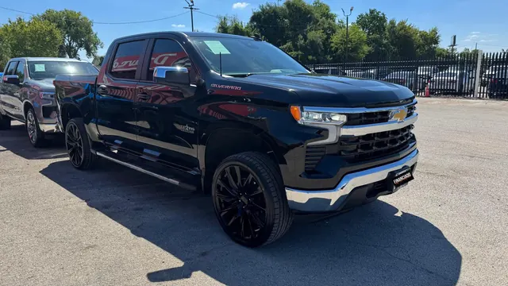

2023 Chevrolet Silverado LT
Negro • ID CCH-10

1/2Datos generales
| Año | 2023 |
| Marca | Chevrolet |
| Modelo | Silverado LT |
| Tipo | Troca |
| Color | Negro |
| Millas | 30,000 millas |
| Asientos | 5 o 6 pasajeros |
Motor y transmisión
| Motor | 2.7L Turbo High-Output de 4 cilindros |
| Potencia | 310 hp |
| Torque | 430 lb-pie |
| Transmisión | Automática de 8 velocidades |
| Tracción | Por confirmar |
| Combustible | Gasolina |
Capacidades
| Remolque máximo | 8,900 lbs |
| Tanque de combustible | 24 galones |
| Rendimiento | 18/21 MPG (ciudad/carretera) |
Dimensiones
| Largo | 231.88 pulgadas |
| Ancho | 81.24 pulgadas |
| Alto | 75.6 pulgadas |
| Distancia entre ejes | 147.45 pulgadas |
Carrocería
| Rines de serie | 17 pulgadas |
Se ve en las fotos
- Cabina doble
- Estribos
- Rines negros grandes
- Enganche de remolque
Ideal para
El día a día y el trabajo, con un look moderno.
Ficha técnica del modelo según el fabricante y medios especializados. Confirma los datos exactos de esta unidad con el dealer.
Motor estándar (RPO) del trim LT según fichas de Chevrolet (2.7L Turbo HO: 310 hp / 430 lb-pie, automática de 8). Tracción no confirmada: RWD de serie, 4x4 opcional.
Versión 4WD según fichas de concesionario (tracción de la unidad no verificada; la 2WD es 19/22 MPG). Rines estándar de 17 pulgadas (20 pulgadas opcionales). / 4WD version per dealer listings (unit's drivetrain unverified; 2WD is 19/22 MPG). Standard 17-inch wheels (20-inch optional).